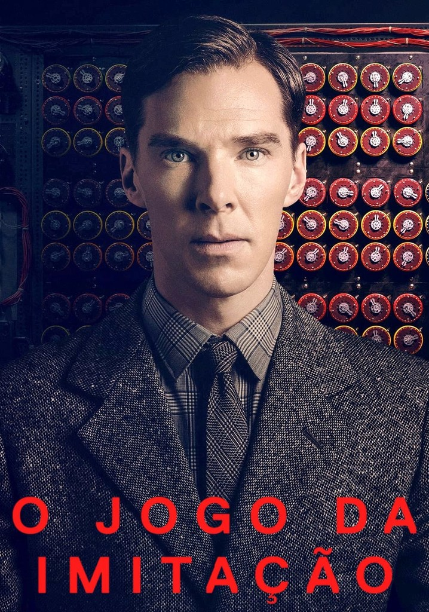

No primeiro filme, "John Wick," somos apresentados a John Wick (interpretado por Keanu Reeves),
um ex-assassino de aluguel que está tentando deixar seu passado sombrio para trás após a morte de sua
esposa.
No entanto, quando um grupo de criminosos russos invadem sua casa, roubam seu carro e matam seu cachorro -
um presente de sua falecida esposa - ele é empurrado de volta ao mundo do crime que tentou abandonar.
Determinado a se vingar, Wick entra em uma jornada de ação implacável e feroz, enfrentando assassinos e
chefes do submundo criminal, enquanto busca vingança pelo que lhe foi tirado.

Um jovem programador chamado Caleb ganha um concurso e recebe a oportunidade de testar uma inteligência artificial criada por Nathan,
um brilhante e recluso bilionário. Mas conforme os testes progridem, Caleb descobre que essa inteligência artificial é tão sofisticada
e imprevisível que ele não sabe mais em quem confiar.

Em 1939, a recém-criada agência de inteligência britânica MI6 recruta Alan Turing,
um aluno da Universidade de Cambridge, para entender códigos nazistas, incluindo o "Enigma",
que os criptógrafos acreditavam ser inquebrável. A equipe de Turing, incluindo Joan Clarke, analisa as mensagens de "Enigma",
enquanto ele constrói uma máquina para decifrá-las. Após desvendar as codificações, Turing se torna herói. Porém, em 1952,
autoridades revelam sua homossexualidade, e a vida dele vira um pesadelo.